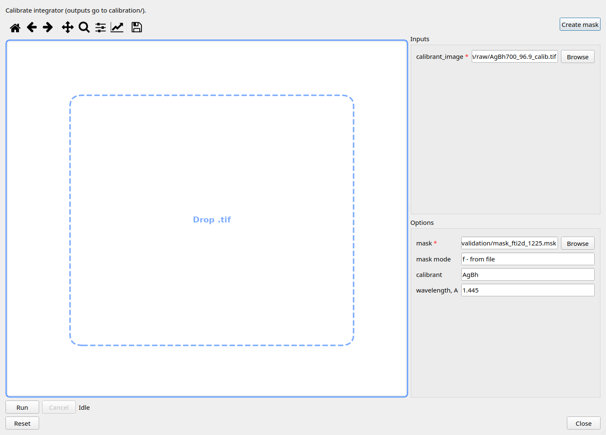
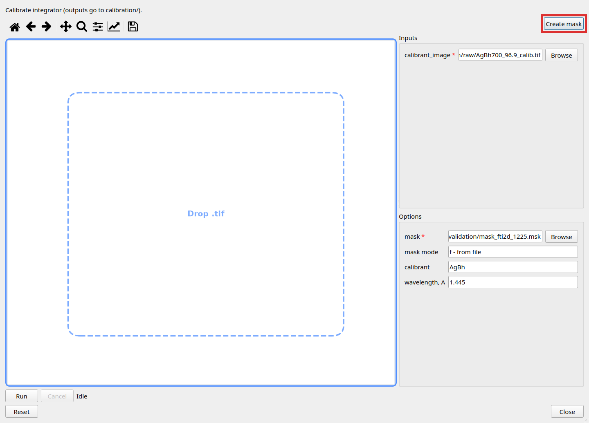
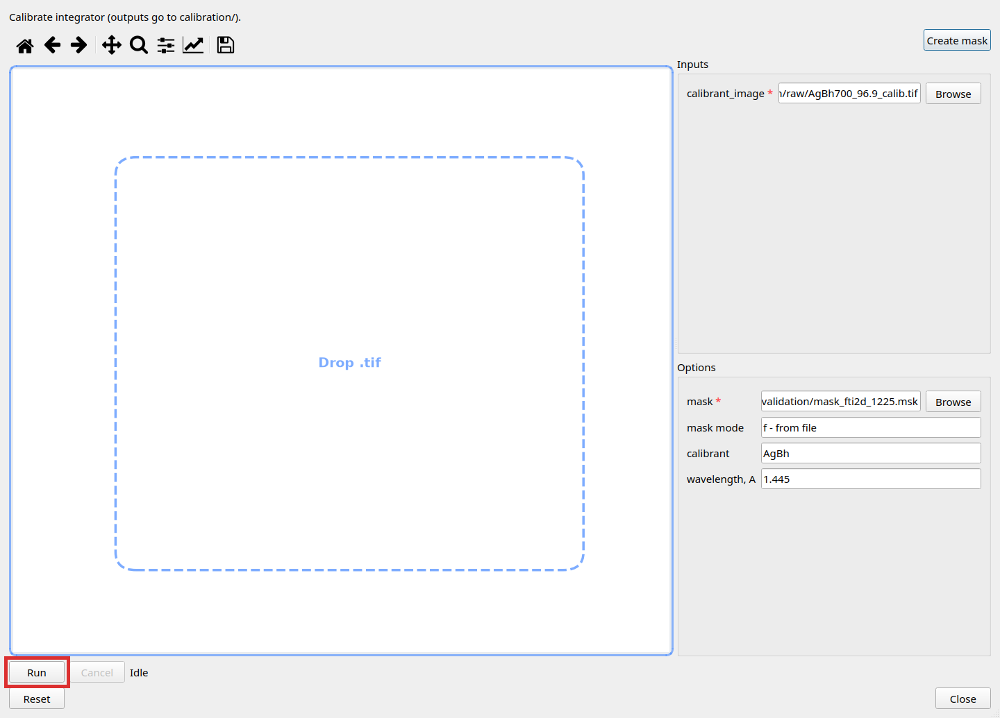

The Set calibration wizard builds (or refreshes) the pyFAI integrator for the current working
directory. You point it at a calibrant TIFF, a mask, and optional config; Run writes results under
WorkingDir/calibration/ (including integrator/ and refined.yml).
Until calibration succeeds, new TIFFs are integrated only in a coarse proxy mode.
Mask editing is a separate window opened from this wizard — see Mask (Create mask, or left-click the calibrant image when one is loaded).

Main window left → Set calibration.
Create mask → Mask wizard opens → edit / Save mask → return here (mask path updates). Full steps: Mask.

Set calibrant_image (TIFF) → confirm mask path → clear or set config_path as needed → Run → wait until the wizard status is Idle → Close.

Left panel Reset (Calibration group), or Reset inside the wizard — clears session calibration and returns toward uncalibrated proxy integration.